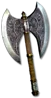

Heyday

Winter Wolf
Great Axe
Damage: 9-30 (two-handed)
Required Level: 33
+20-30 to Minimum Damage
+55-75 to Maximum Damage
+70-100% Enhanced Weapon Damage
+25% Increased Attack Speed
6% chance to cast level 4 Shiver Armor when struck
Level 8 Summon Spirit Wolf (15 charges)
Socketed (1-2)
+70-80% Enhanced Weapon Damage
Unique Axe
Winter Wolf
- Type
- Axe
- Base
- Great Axe
- Tier
- Normal
- Required level
- 33
- Item level
- 25
- Required strength
- 63
- Required dexterity
- 39
- Max sockets
- 6